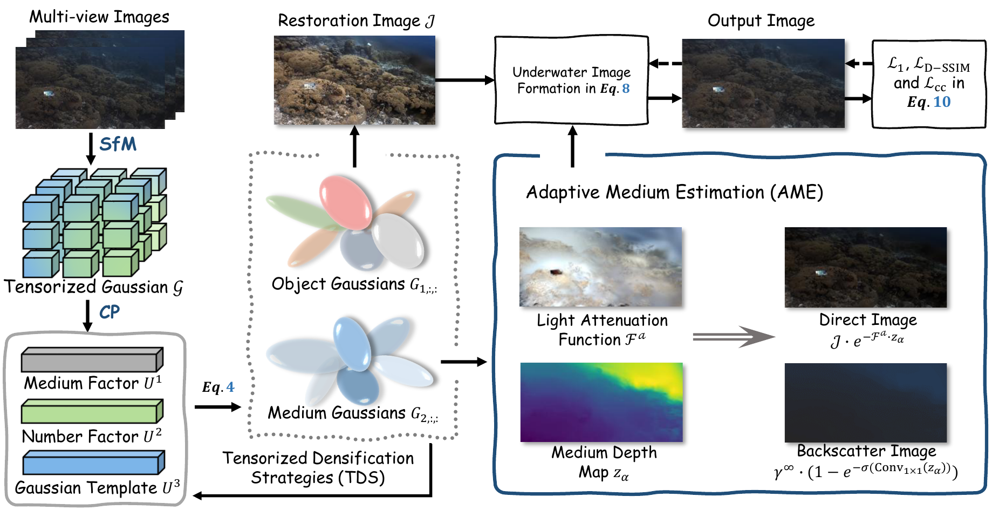
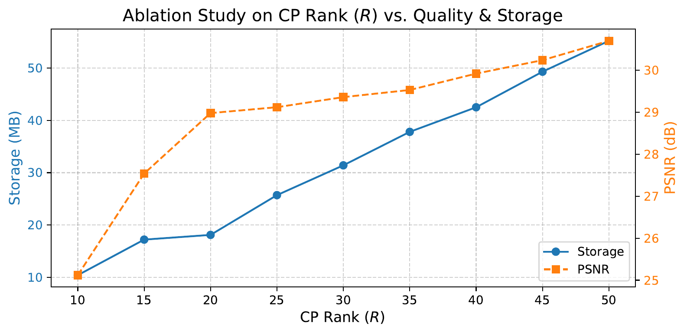

Abstract
Underwater scene reconstruction faces unique challenges due to light scattering and absorption by water medium. We present TUGS, a physics-based compact neural representation for underwater scenes. Our method employs CP decomposition (Candecomp-Parafac) to factorize 3D Gaussian parameters into compact low-rank factors, significantly reducing storage requirements while maintaining reconstruction quality. We integrate the SeaThru physical model to explicitly separate direct object signal from volumetric backscatter, enabling realistic underwater image formation. Our factor sharing strategy shares geometric factors across the scene while allowing appearance variations, achieving 10-35x compression compared to standard SeaThru-NeRF with competitive quality.
Key Features
Compact Storage
Achieves 10-35x compression compared to standard 3DGS (383 MB → 11-21 MB)
High Quality
Surpasses 3DGS by +2.4dB PSNR with only 50% storage at rank=50
Real-time Rendering
Supports efficient rendering suitable for edge device deployment
Physical Correctness
Incorporates wavelength-dependent light attenuation and backscatter modeling
Method Overview

Overview of TUGS framework. We use CP decomposition to tensorize Gaussian parameters and employ a physics-based underwater imaging model to handle light attenuation and backscatter.
Key Technical Contributions
- Tensorized Gaussian Representation: CP decomposition factorizes 3D Gaussian parameters into compact low-rank factors
- Physics-based Underwater Imaging: SeaThru model explicitly separates direct signal from volumetric backscatter
- Factor Sharing Strategy: Shared geometric factors with appearance variations for compact representation
CP Rank Analysis
The CP rank (R) controls the trade-off between reconstruction quality and model compactness. We perform sensitivity analysis to determine the optimal rank:

Ablation study on CP Rank (R) vs. Quality & Storage. PSNR improves with R but growth stabilizes after R=20, while storage grows linearly.
Key Findings
- R=20 offers an optimal trade-off: 28.98 dB PSNR with only 18.10 MB storage
- R=50 triples storage to 55.20 MB for only 1.7 dB gain
- Even at R=50 (55 MB), we surpass 3DGS (105 MB) by +2.4 dB with 50% size reduction
Recommendation: We select R=20 as the default to balance reconstruction quality and compactness, prioritizing edge deployment efficiency.
Experimental Results
Quantitative evaluation on the SeaThru-NeRF dataset. We report PSNR↑, SSIM↑, LPIPS↓, storage, and FPS:
| Method | IUI3 Red Sea | Curaçao | J.G. Red Sea | Panama | FPS | ||||||||||||
|---|---|---|---|---|---|---|---|---|---|---|---|---|---|---|---|---|---|
| PSNR | SSIM | LPIPS | MB | PSNR | SSIM | LPIPS | MB | PSNR | SSIM | LPIPS | MB | PSNR | SSIM | LPIPS | MB | ||
| SeaThru-NeRF | 25.84 | 0.85 | 0.30 | 383 | 26.17 | 0.81 | 0.28 | 383 | 21.09 | 0.76 | 0.29 | 383 | 27.04 | 0.85 | 0.22 | 383 | 0.09 |
| TensoRF | 17.33 | 0.55 | 0.63 | 66 | 23.38 | 0.79 | 0.45 | 66 | 15.19 | 0.51 | 0.59 | 66 | 20.76 | 0.75 | 0.38 | 66 | 0.21 |
| 3DGS | 28.28 | 0.86 | 0.26 | 105 | 27.15 | 0.85 | 0.25 | 97 | 20.26 | 0.82 | 0.23 | 89 | 30.23 | 0.89 | 0.19 | 75 | 154.9 |
| SeaSplat | 26.47 | 0.85 | 0.28 | 140 | 27.79 | 0.86 | 0.27 | 129 | 19.21 | 0.70 | 0.35 | 138 | 29.79 | 0.88 | 0.19 | 104 | 80.7 |
| UW-GS | 27.06 | 0.84 | 0.27 | 78 | 27.62 | 0.87 | 0.25 | 64 | 20.05 | 0.71 | 0.32 | 68 | 31.36 | 0.90 | 0.17 | 61 | 78.6 |
| Ours (R=20) | 28.98 | 0.86 | 0.26 | 18 | 28.60 | 0.88 | 0.23 | 21 | 22.21 | 0.84 | 0.23 | 11 | 31.19 | 0.92 | 0.16 | 12 | 106.7 |
| Ours (R=30) | 29.36 | 0.87 | 0.25 | 31 | 28.71 | 0.87 | 0.22 | 43 | 22.43 | 0.86 | 0.22 | 37 | 31.51 | 0.92 | 0.15 | 34 | 82.1 |
Key Achievements
- Best Compression-Quality Trade-off: Ours (R=20) achieves comparable or better quality than 3DGS with 5-10x less storage (11-21 MB vs 75-105 MB)
- Real-time Rendering: 106.7 FPS at R=20, faster than SeaSplat (80.7) and UW-GS (78.6)
- State-of-the-Art Quality: Ours (R=30) achieves the best PSNR across all four scenes with competitive storage
Citation
If you find this work useful for your research, please cite:
@inproceedings{lian2026tugs,
title={TUGS: Physics-based Compact Representation of Underwater Scenes by Tensorized Gaussians},
author={Lian, Shijie and Zhang, Ziyi and Yang, Laurence Tianruo and Ren, Mengyu and Liu, Debin and Li, Hua},
booktitle={Proceedings of the IEEE International Conference on Multimedia and Expo (ICME)},
year={2026},
organization={IEEE}
}